I'm Keyaan, a motion & interaction designer turning imagination into reality.
Most recently a motion & experience design intern @
Currently leading the visual design team @
Most recently a motion & experience design intern @
Currently leading the visual design team @
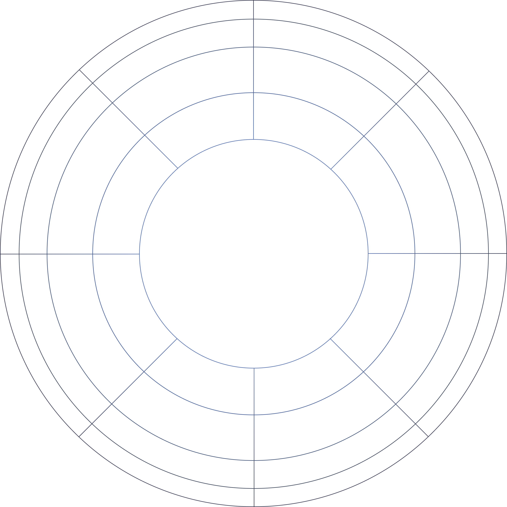
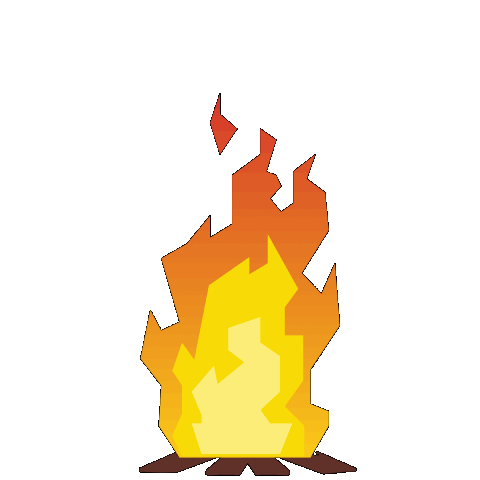
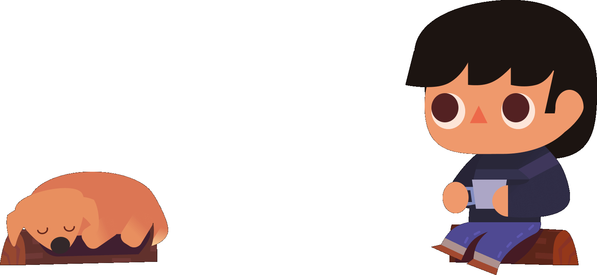
As a Motion Design intern for the Space, Science and Technology (SS&T) directorate of the Canadian Space Agency (CSA), I created infographics and an animated informative video to improve the team's stakeholder engagement work.
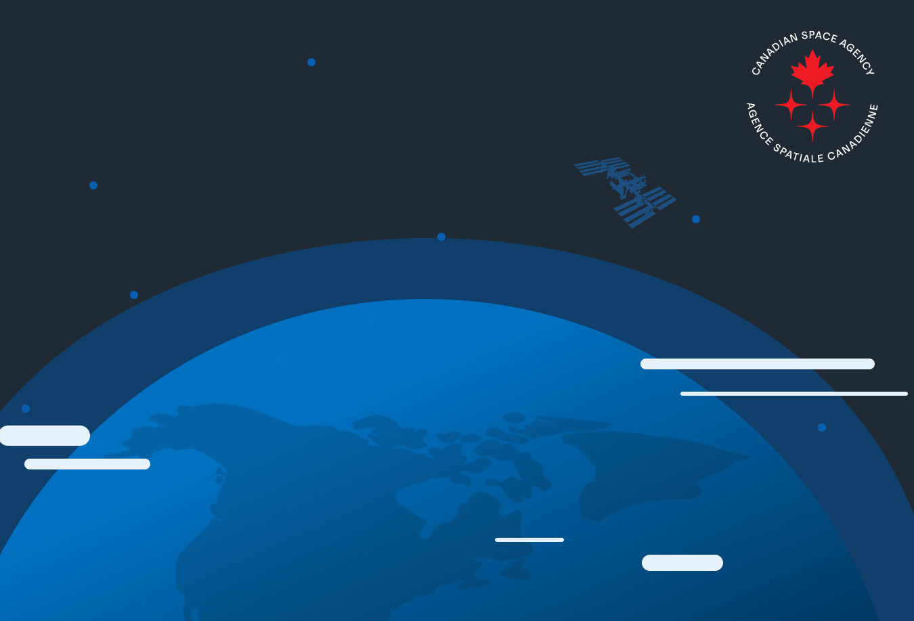
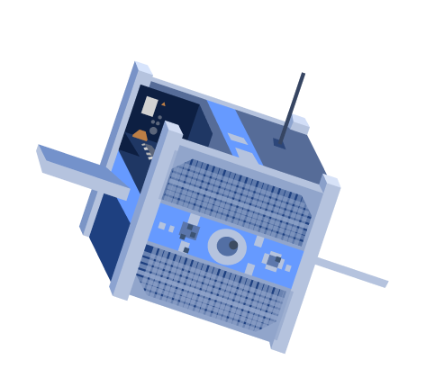
Conducting user research and designing fun, yet challenging puzzles for a narrative driven video game. Responsible for user testing, game design, and development, I worked with a team of 3 other students completing the project in the Unity engine.
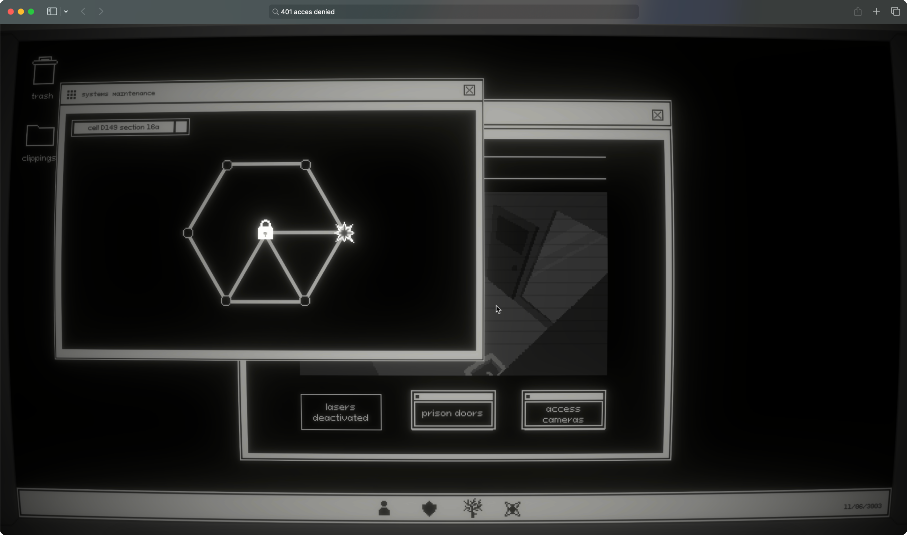
As the director of visual design for SFU Surge, and, as a result, a lead organizer of SFU's biggest hackathon; I was responsible for designing event websites, art directing promotional campaigns, animating launch videos, and leading a team.
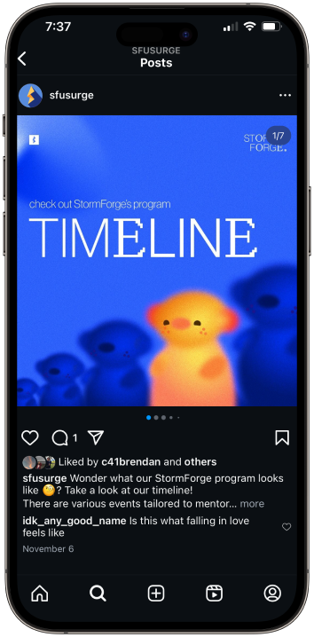
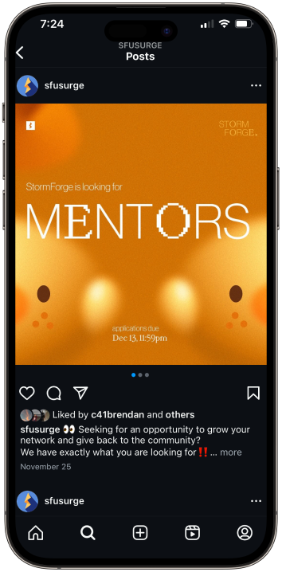
For SFU’s 3rd Annual BrandStorm competition, my team took home 1st for our AR marketing campaign and website redesign. Our project solved Frontline’s problem of finding young talent and streamlining recruitment.
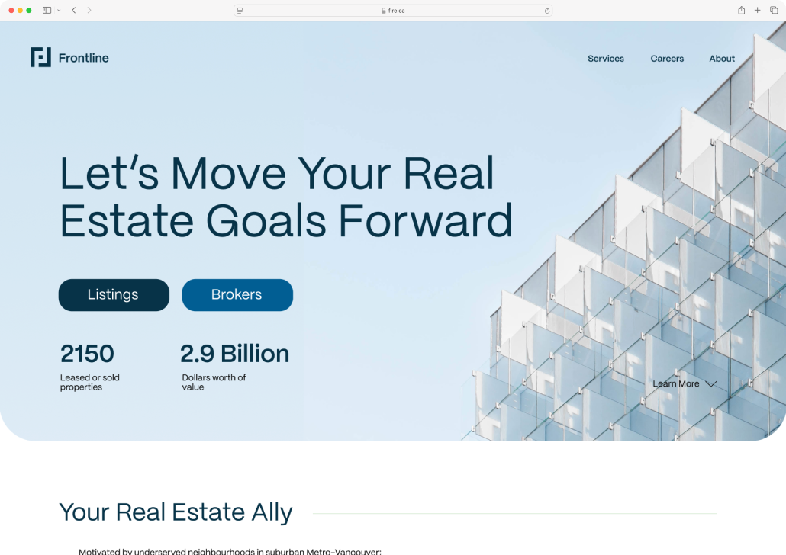
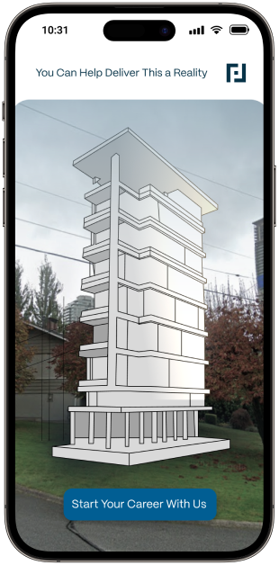
As an experience design intern for the Space, Science and Technology (SS&T) directorate of the Canadian Space Agency (CSA), I designed a comprehensive expertise system with the goal of streamlining the team's work.
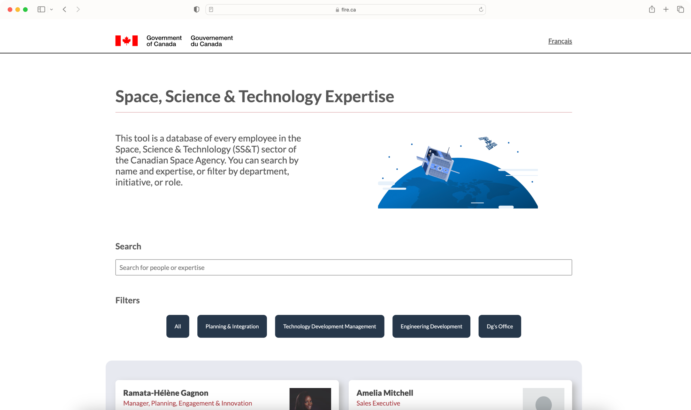
An animated lyric and motion graphics video for the song Moonlight Sunrise by the band Twice.
A frustrating and challenging platformer style game inspired by Only Up created in the Unity game engine.
An online interactive personality quiz designed to help students find volunteer and community engagement opportunities at SFU.